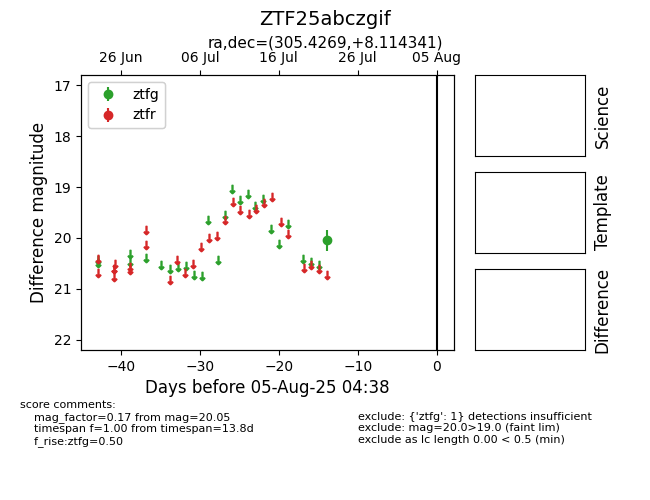

Target ZTF25abczgif at 2025-08-05 04:38, see:
FINK: fink-portal.org/ZTF25abczgif
Lasair: lasair-ztf.lsst.ac.uk/objects/ZTF25abczgif
ALeRCE: alerce.online/object/ZTF25abczgif
alt names
ZTF25abczgif (ztf,fink)
coordinates:
equatorial (ra, dec) = (305.4269,+8.11434)
galactic (l, b) = (51.0353,-15.88869)
photometry
last ztfg=20.05
1 ztfg detections
